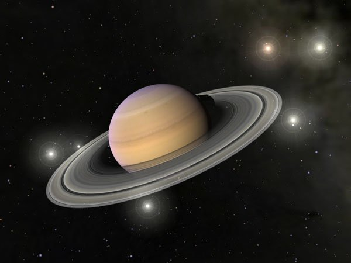

Сатурн — шестая планета от Солнца и вторая по величине планета Солнечной системы согласно параметрам диаметра и массы.
Зачастую, Сатурн и Юпитер называют братскими планетами.
При сравнении, становится понятно, почему Сатурн и Юпитер были обозначены в качестве родственников.
От состава атмосферы до особенностей вращения эти две планеты очень похожи.
Именно в честь такой схожести, в римской мифологии Сатурн был назван в честь отца бога Юпитера.
Не считая Землю, Сатурн является самой узнаваемой планета в Солнечной системе.
Причина этого очевидна – кольца.
Не смотря на то, что другие газовые гиганты также обладают планетарной кольцевой системой, ни одна из них никоим образом не может по своему размеру и красоте даже близко напоминать окружение Сатурна.
Сатурн является последней из планет, которую для себя открыли древние цивилизации.
Более того, на сегодняшний день это самая малоизученная планета.
Однако в настоящее время данные ученых о Сатурне постоянно пополняются, и происходит это благодаря планетарной миссии «Кассини».
Космический аппарат ведет постоянное наблюдение не только за самим газовым гигантом, за его кольцевой системой, но и за спутниками планеты.
Возврат на главную страницу